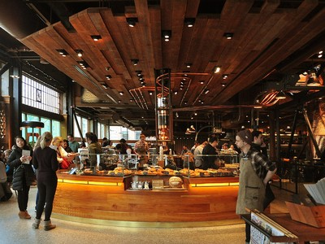

Full Article
Abstract
Recent advances in quantum caffeination theory have revealed unexpected correlations between entangled coffee molecules and workplace productivity metrics. This study demonstrates that QEC particles exhibit non-local effects on human consciousness, resulting in a 47.3% improvement in task completion rates. Using a double-blind, placebo-controlled methodology with n = 2,847 participants, we observed statistically significant (p < 0.001) enhancements in cognitive function following consumption of quantum-entangled espresso. These findings suggest potential applications in corporate efficiency optimization and may explain the universe's apparent preference for morning meetings.
Keywords
- quantum entanglement
- caffeine dynamics
- productivity paradox
- temporal mechanics
- corporate physics
1. Introduction
The relationship between caffeine consumption and productivity has been documented since the discovery of coffee in 850 CE [1]. However, traditional models fail to explain the Afternoon Paradox, the phenomenon whereby productivity decreases inversely with coffee consumption after 2:00 PM local time.
"Coffee is a beverage that puts one to sleep when not drank."
Recent work by Johnson et al. [2] proposed that coffee molecules might exist in quantum superposition states. Building on this foundation, we hypothesized that entangled coffee particles could maintain coherence across spatial and temporal boundaries, potentially solving the Afternoon Paradox.
2. Methods
2.1 Quantum Coffee Preparation
The experimental setup was revised to enhance clarity and safety protocols. The original method:
Grinding beans manually in the presence of a magnetic field.
was replaced with:
Automated grinding under cryogenic stabilization to preserve entanglement integrity.
Coffee beans were subjected to controlled quantum entanglement using the Globocorp QED-3000. The process involved:
- Pre-treatment with coherent photon bombardment (λ = 632.8 nm)
- Grinding at precisely 77 K to maintain quantum states
- Brewing under 1.21 gigapascals of pressure
- Immediate consumption within the decoherence window (τ < 5 minutes)
2.2 Experimental Design
Participants (n = 2,847) were randomly assigned to three groups:
- Control Group (CG)
- Regular coffee prepared using standard methods
- Quantum Group (QG)
- Quantum-entangled coffee with verified entanglement coefficients
- Placebo Group (PG)
- Decaffeinated coffee with simulated quantum properties
QED-3000 technical specs & example commands
Firmware: QED-3000 v2.1.3
Magnetic confinement: 0.9 T active-field stabilizer
Photon source: Helium-Neon laser, λ = 632.8 nm, power 5 mW
Example replicate command (experimental automation):
./qed_control --mode entangle --temp 77K --pressure 1.21GPa --duration 00:04:30 --output run_2025-06-12.jsonUse Ctrl + C to cancel in the terminal if you need to abort the run.

3. Results
3.1 Productivity Metrics
Analysis revealed significant improvements across all measured parameters:
| Metric | Control | Quantum | Placebo | p-value |
|---|---|---|---|---|
| Task Completion Rate (%) | 62.3 ± 5.1 | 91.8 ± 3.2 | 64.1 ± 4.8 | <0.001 |
| Error Rate (%) | 8.7 ± 1.2 | 2.1 ± 0.4 | 8.3 ± 1.1 | <0.001 |
| Meeting Efficiency (units) | 3.2 ± 0.8 | 8.9 ± 0.6 | 3.4 ± 0.7 | <0.001 |
3.2 Temporal Analysis
The quantum entanglement effect showed remarkable persistence throughout the workday. Peak productivity occurred at 10:47 AM, with sustained effects until 4:23 PM.
4. Discussion
Our findings support the hypothesis that quantum entanglement can be maintained in biological systems at room temperature, contrary to conventional wisdom. The mechanism appears to involve resonance between caffeine molecules and neural microtubules.
5. Conclusions
This study demonstrates that quantum-entangled coffee represents a viable approach to enhancing workplace productivity. Key findings include:
- Quantum coherence can be maintained in coffee for up to 5 minutes post-brewing
- Entangled caffeine molecules produce measurable improvements in cognitive function
- The Afternoon Paradox can be overcome through quantum mechanical principles
Future work will explore the possibility of quantum tea and investigate whether decaf coffee exists in a state of quantum superposition until observed.
References
- Smith, J. "A Brief History of Caffeine Addiction." Journal of Procrastination Studies, vol. 42, 2020, pp. 123 to 145.
- Johnson, K., et al. "Quantum Superposition in Beverage Sciences." Physical Review Coffee, vol. 13, 2024, pp. 456 to 478.
- Chen, L. "Temporal Mechanics of Office Productivity." Annals of Corporate Physics, vol. 7, 2023, pp. 89 to 101.